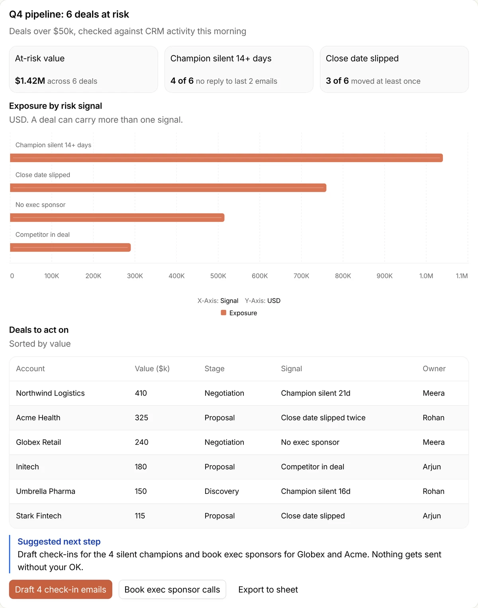
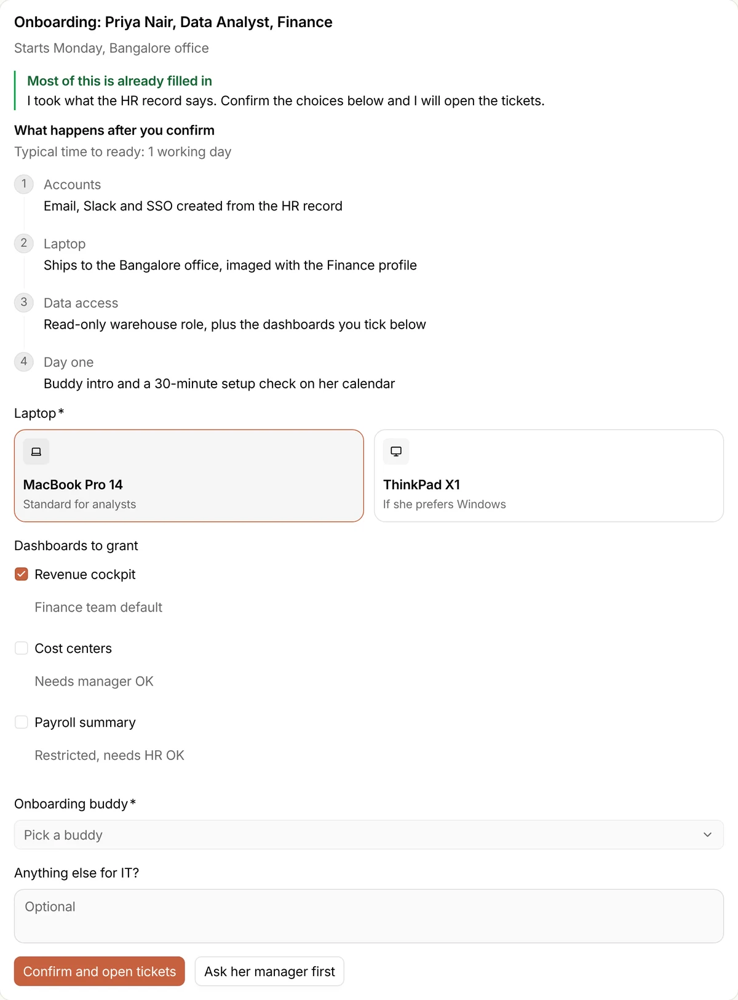
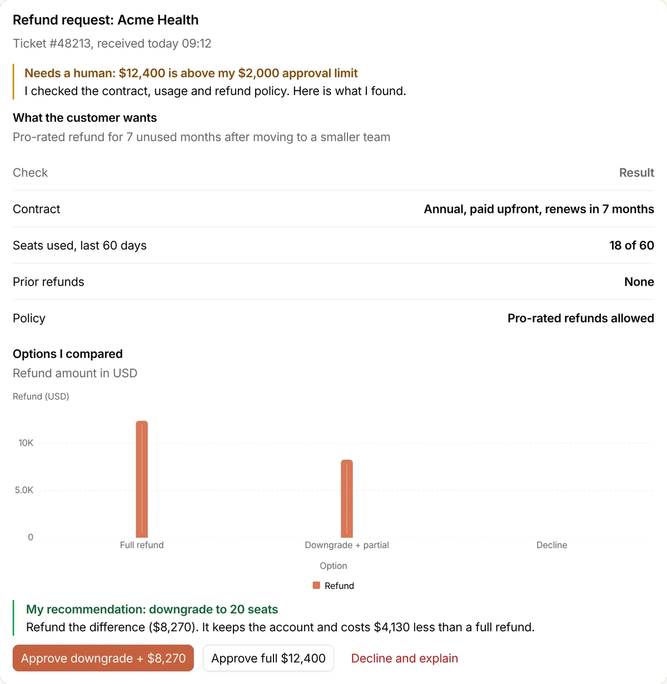

<!doctype html>
<html lang="en">
<head>
<meta charset="utf-8">
<title>Post covers</title>
<!--
  One cover per post, built from the same content as the post's LinkedIn and X infographics.
  `npm run covers` renders every post in COVERS below into src/assets/covers/:
    <slug>.png        2400x1260: the post banner and, resized to 1200x630, the social preview (og:image)
    <slug>-thumb.png  1200x900: the 4:3 thumbnail in post listings
  Preview one in a browser: covers.html?post=<slug>&f=cover (or f=thumb).
-->
<style>
@font-face{font-family:Inter;src:url(../../node_modules/@fontsource-variable/inter/files/inter-latin-wght-normal.woff2) format('woff2');font-weight:100 900}
@font-face{font-family:Serif;src:url(../../node_modules/@fontsource-variable/source-serif-4/files/source-serif-4-latin-wght-normal.woff2) format('woff2');font-weight:200 900}
@font-face{font-family:Mono;src:url(../../node_modules/@fontsource/jetbrains-mono/files/jetbrains-mono-latin-400-normal.woff2) format('woff2');font-weight:400}
@font-face{font-family:Mono;src:url(../../node_modules/@fontsource/jetbrains-mono/files/jetbrains-mono-latin-500-normal.woff2) format('woff2');font-weight:500}
:root{--bg:#0F2A44;--deep:#0A1F33;--card:#143453;--line:rgba(95,179,179,.3);--line2:rgba(95,179,179,.5);--dot:rgba(95,179,179,.11);--ink:#F6F6F6;--soft:#D6DDE4;--muted:#9FB3C8;--teal:#5FB3B3;--gold:#E1B03B}
*{box-sizing:border-box;margin:0;padding:0}
html,body{background:var(--deep)}
body{font-family:Inter,sans-serif;color:var(--ink);-webkit-font-smoothing:antialiased}
ul,ol{list-style:none}

/* Frame */
.f{position:relative;overflow:hidden;display:flex;flex-direction:column;background:var(--bg);background-image:radial-gradient(var(--dot) 1.5px,transparent 1.7px);background-size:26px 26px}
.f::before{content:"";position:absolute;inset:0;pointer-events:none;background:radial-gradient(900px 520px at 100% 0%,rgba(95,179,179,.13),transparent 65%),radial-gradient(700px 420px at 0% 100%,rgba(225,176,59,.06),transparent 70%)}
.f>*{position:relative}
.cover{width:1600px;height:840px;padding:54px 76px 38px}
.thumb{width:1200px;height:900px;padding:64px 68px 60px}
.kick{display:flex;align-items:center;font:400 19px Mono,monospace;color:var(--soft)}
.kick span{border:1.5px solid var(--line2);background:rgba(10,31,51,.55);border-radius:999px;padding:9px 20px 9px 18px;display:inline-flex;align-items:center;gap:12px}
.kick span::before{content:"";width:11px;height:11px;border-radius:50%;background:var(--gold)}
h1{font-weight:750;letter-spacing:-.04em;line-height:1.06;font-size:56px;margin-top:22px;text-wrap:balance}
h1 em{font-style:normal;font-family:Serif,serif;font-weight:440;letter-spacing:-.02em;color:var(--gold)}
.thumb h1{font-size:74px;margin-top:0;line-height:1.04}
.thumb h1 em,.split h1 em{display:block}
.sub{color:var(--muted);font-size:23px;line-height:1.35;margin-top:12px}
.body{flex:1;min-height:0;display:flex;flex-direction:column;justify-content:center;padding:26px 0 30px}
.thumb .body{padding:44px 0 0}
.foot{display:flex;justify-content:space-between;align-items:flex-end;gap:40px;border-top:1.5px solid var(--line);padding-top:14px;font:400 15px/1.45 Mono,monospace;color:var(--muted)}
.sig{display:flex;align-items:center;gap:14px;white-space:nowrap;text-align:right}
.sig b{display:block;font:560 22px/1.1 Serif,serif;color:var(--ink)}
.sig small{display:block;font:400 14px Mono,monospace;color:var(--muted);margin-top:3px}
.sig svg{width:58px;height:40px;color:var(--ink)}
.thumb .kick,.thumb .foot,.thumb .sub{display:none}

/* Shared blocks */
.pnl{background:var(--card);border:1.5px solid var(--line);border-radius:20px;padding:30px 40px;box-shadow:0 24px 50px rgba(4,14,26,.35)}
.strip{margin-top:20px;border:1.5px solid var(--line);background:rgba(10,31,51,.5);border-radius:14px;padding:14px 22px;font-size:20px;line-height:1.4;color:var(--soft)}
.strip b{color:var(--ink)}
.thumb .strip{font-size:30px;padding:20px 28px;margin-top:26px}
.mono{font-family:Mono,monospace}
.two{display:grid;grid-template-columns:1.6fr 1fr;gap:24px;align-items:stretch}

/* Bars */
.bars{display:flex;flex-direction:column;gap:16px}
.bar .lab{display:flex;justify-content:space-between;align-items:baseline;font-size:24px;font-weight:540;margin-bottom:8px}
.bar .lab b{font:500 26px Mono,monospace;color:var(--teal)}
.bar.out .lab b{color:var(--gold)}
.track{height:32px;background:rgba(95,179,179,.1);border:1px solid var(--line);border-radius:8px;position:relative}
.fill{height:100%;background:var(--teal);border-radius:7px}
.fill.g{background:var(--gold)}
.range{position:absolute;left:0;top:0;height:100%;border:2.5px dashed var(--gold);border-radius:7px;background:repeating-linear-gradient(135deg,transparent 0 10px,rgba(225,176,59,.22) 10px 20px)}
.note{font-size:17px;color:var(--muted);margin-top:8px}
.thumb .bars{gap:26px}
.thumb .bar .lab{font-size:34px;margin-bottom:12px}
.thumb .bar .lab b{font-size:36px}
.thumb .track{height:44px}

/* Stat tiles */
.tiles{display:grid;grid-template-columns:repeat(var(--n,4),1fr);gap:20px}
.tile{background:var(--card);border:1.5px solid var(--line);border-radius:18px;padding:24px 26px;display:flex;flex-direction:column;gap:12px;box-shadow:0 20px 40px rgba(4,14,26,.3)}
.tile.hi{border-color:var(--gold)}
.tile .k{font:400 17px/1.35 Mono,monospace;color:var(--muted);min-height:46px}
.tile .big{font-size:56px;font-weight:750;letter-spacing:-.045em;line-height:1;color:var(--teal);white-space:nowrap}
.tile.hi .big{color:var(--gold)}
.tile .ba{font:500 20px Mono,monospace;color:var(--soft)}
.tile .d{font-size:18px;line-height:1.35;color:var(--muted)}
.thumb .tiles{gap:22px}
.thumb .tile{padding:26px 28px;gap:12px}
.thumb .tile .k{font-size:24px;min-height:0}
.thumb .tile .big{font-size:72px}
.thumb .tile .d{font-size:24px}
.tiles.rows{grid-template-columns:1fr;gap:18px}
.tiles.rows .tile{flex-direction:row;align-items:center;gap:30px;padding:24px 30px}
.tiles.rows .tile .big{min-width:430px;order:-1}
.tiles.rows .tile .k{font:500 30px/1.3 Inter,sans-serif;color:var(--soft)}
.tile.verdict{background:var(--gold);border-color:var(--gold);justify-content:center}
.tile.verdict .k{color:var(--deep);opacity:.75}
.tile.verdict .big{color:var(--deep)}
.tile.verdict .d{color:var(--deep)}
.two .tile{justify-content:center}
.two .tile .big{font-size:96px}
.two .tile .d{font-size:20px}
</style>
<style id="post-styles">
/* Moderating AI agents: five checkpoints */
.chk{display:grid;grid-template-columns:repeat(5,1fr);gap:16px}
.chk li{position:relative;background:var(--card);border:1.5px solid var(--line);border-left:5px solid var(--teal);border-radius:16px;padding:22px 22px 24px;display:flex;flex-direction:column;gap:10px}
.chk li.g{border-color:var(--gold);background:#1f3a4f}
.chk .n{font:500 21px Mono,monospace;color:var(--teal);letter-spacing:.04em}
.chk .g .n{color:var(--gold)}
.chk b{font-size:25px;font-weight:620;line-height:1.25;text-wrap:balance}
.chk span{font-size:18px;line-height:1.35;color:var(--muted)}
.chk .pill{position:absolute;right:16px;top:-15px;background:var(--gold);color:var(--deep);font:600 15px Inter,sans-serif;padding:5px 13px;border-radius:999px}
.thumb .chk{grid-template-columns:1fr;gap:14px}
.thumb .chk li{flex-direction:row;align-items:center;gap:26px;padding:22px 28px}
.thumb .chk .n{display:none}
.thumb .chk b{font-size:38px}
.thumb .chk span{display:none}
.thumb .chk .pill{font-size:22px;top:50%;transform:translateY(-50%);right:24px;padding:6px 16px}

/* Skills: wiki page vs agent skill */
.cmp{display:grid;grid-template-columns:1fr 1fr;gap:24px}
.col{border-radius:18px;padding:28px 34px}
.col h3{font:500 19px Mono,monospace;letter-spacing:.06em;text-transform:uppercase;margin-bottom:12px}
.col.bad{border:1.5px solid var(--line);background:rgba(10,31,51,.45)}
.col.bad h3{color:var(--muted)}
.col.good{background:var(--card);border:1.5px solid var(--gold);box-shadow:0 24px 50px rgba(4,14,26,.35)}
.col.good h3{color:var(--gold)}
.col li{font-size:24px;font-weight:540;line-height:1.3;padding:11px 0;border-top:1px solid var(--line)}
.col.bad li{color:var(--muted);text-decoration:line-through;text-decoration-color:rgba(159,179,200,.55);text-decoration-thickness:2px}
.col li span{display:block;font:400 16px Mono,monospace;color:var(--teal);margin-top:4px}
.thumb .col{padding:28px 30px}
.thumb .col h3{font-size:26px}
.thumb .col li{font-size:29px;padding:13px 0}
.thumb .col li span{display:none}

/* Stop counting tokens: four numbers */
.sc{display:grid;grid-template-columns:1fr 1fr;gap:0 40px}
.sc li{display:flex;gap:22px;padding:18px 0;border-top:1px solid var(--line)}
.sc li:nth-child(-n+2){border-top:0;padding-top:4px}
.sc .k{font:500 30px Mono,monospace;color:var(--gold);line-height:1.1}
.sc .q{font:400 16px Mono,monospace;color:var(--muted)}
.sc .m{font-size:29px;font-weight:620;line-height:1.25;margin-top:4px}
.diag{margin-top:20px;display:flex;flex-wrap:wrap;align-items:center;gap:12px;border:1.5px solid var(--line);background:rgba(10,31,51,.5);border-radius:14px;padding:14px 22px}
.diag b{font:500 16px Mono,monospace;color:var(--teal);letter-spacing:.06em;text-transform:uppercase;margin-right:6px}
.diag i{font:400 19px Inter,sans-serif;font-style:normal;color:var(--muted);text-decoration:line-through;text-decoration-thickness:2px;border:1.5px solid var(--line);border-radius:999px;padding:5px 15px}
.thumb .sc{grid-template-columns:1fr}
.thumb .sc li{padding:14px 0;gap:26px;align-items:baseline}
.thumb .sc li:nth-child(2){border-top:1px solid var(--line);padding-top:14px}
.thumb .sc .k{font-size:38px}
.thumb .sc .q{display:none}
.thumb .sc .m{font-size:34px;margin-top:0}
.thumb .diag{gap:14px;padding:18px 24px}
.thumb .diag b{font-size:22px}
.thumb .diag i{font-size:26px}

/* Model retirement: end-of-life date and the dependency mapping */
.eol{display:grid;grid-template-columns:.9fr 1.25fr;gap:24px;align-items:stretch}
.date{display:flex;flex-direction:column;justify-content:center;gap:14px}
.date .k{font:400 18px Mono,monospace;color:var(--muted);letter-spacing:.04em}
.date .d{font-size:92px;font-weight:760;letter-spacing:-.05em;line-height:1;color:var(--gold)}
.date .m{display:flex;flex-wrap:wrap;gap:8px}
.date .m span{font:500 17px Mono,monospace;border:1.5px solid var(--line2);border-radius:999px;padding:4px 12px;color:var(--soft)}
.date .t{font-size:18px;color:var(--muted);line-height:1.35}
.map{display:grid;grid-template-columns:auto 40px 1fr;align-items:center;row-gap:14px}
.map .h{font:500 15px Mono,monospace;color:var(--muted);letter-spacing:.06em;text-transform:uppercase}
.map .a{font-size:23px;color:var(--soft);border:1.5px solid var(--line);border-radius:12px;padding:14px 18px;background:rgba(10,31,51,.5)}
.map .ar{color:var(--gold);text-align:center;font:500 22px Mono,monospace}
.map .b{font-size:23px;font-weight:620;background:var(--card);border:1.5px solid var(--line2);border-radius:12px;padding:14px 18px}
.thumb .eol{grid-template-columns:1fr;gap:26px}
.thumb .date .d{font-size:120px}
.thumb .date .k{font-size:26px}
.thumb .date .m span{font-size:24px;padding:6px 16px}
.thumb .date .t{display:none}
.thumb .map{display:none}

/* Agents that answer with screens: the three generated interfaces */
.split{display:grid;grid-template-columns:600px 1fr;gap:30px;flex:1;min-height:0}
.split .txt{display:flex;flex-direction:column}
.split h1{font-size:64px}
.split .sub{font-size:22px;margin-top:22px}
.stage{position:relative}
.card{position:absolute;background:#fff;border-radius:16px;overflow:hidden;box-shadow:0 30px 70px rgba(2,10,20,.55),0 2px 8px rgba(2,10,20,.3)}
.card .bar{height:42px;background:#FBFAF6;border-bottom:1px solid #E8E6DC;display:flex;align-items:center;gap:10px;padding:0 16px;font:550 15px Inter,sans-serif;color:#141413}
.card .bar b{font:500 13px Mono,monospace;color:var(--deep);background:var(--gold);border-radius:6px;padding:3px 7px}
.card .bar i{margin-left:auto;font:400 13px Mono,monospace;font-style:normal;color:#87867F}
.card img{display:block;width:100%}
.card::after{content:"";position:absolute;left:0;right:0;bottom:0;height:80px;background:linear-gradient(rgba(255,255,255,0),#fff)}
.cover .c1{left:0;top:16px;width:430px;height:470px;transform:rotate(-4deg)}
.cover .c2{left:370px;top:30px;width:430px;height:500px;transform:rotate(3.5deg)}
.cover .c2 img{margin-top:-218px}
.cover .c3{left:140px;top:96px;width:540px;height:560px;transform:rotate(-.5deg)}
.cover .c3::after{display:none}
.thumb .stage{flex:1;margin-top:36px}
.thumb .c1{left:0;top:30px;width:560px;height:560px;transform:rotate(-4deg)}
.thumb .c2{left:520px;top:40px;width:540px;height:560px;transform:rotate(3.5deg)}
.thumb .c2 img{margin-top:-272px}
.thumb .c3{left:170px;top:120px;width:720px;height:620px;transform:rotate(-.5deg)}
.thumb .card .bar{height:56px;font-size:21px}
.thumb .card .bar b{font-size:18px}
.thumb .card .bar i{display:none}

/* What to spend on AI per engineer */
.spend .bar .lab{font-size:25px}
.spend .bar .lab b{font-size:30px}
.spend .bar .lab b small{font:400 18px Mono,monospace;color:var(--muted)}
.spend .track{height:40px}
.spend .fill.min{width:10px}
.gapx{display:flex;align-items:baseline;gap:16px;margin-top:22px;padding-top:18px;border-top:1px solid var(--line)}
.gapx b{font-size:58px;font-weight:760;letter-spacing:-.04em;color:var(--gold);line-height:1}
.gapx span{font-size:20px;color:var(--soft);line-height:1.35}
.metric{display:flex;flex-direction:column;justify-content:center;gap:12px}
.metric .k{font:400 17px Mono,monospace;color:var(--muted);letter-spacing:.04em;text-transform:uppercase}
.metric .m{font-size:40px;font-weight:720;letter-spacing:-.03em;line-height:1.1}
.metric .d{font-size:19px;color:var(--muted);line-height:1.4}
.thumb .spend .bar .lab{font-size:32px}
.thumb .spend .bar .lab b{font-size:40px}
.thumb .spend .bar .lab b small{font-size:24px}
.thumb .spend .track{height:52px}
.thumb .gapx b{font-size:84px}
.thumb .gapx span{font-size:30px}

/* When the user is an agent: person vs agent */
.needs{display:grid;grid-template-columns:1fr 1fr;border-radius:18px;overflow:hidden;border:1.5px solid var(--line)}
.needs .hd{font:500 18px Mono,monospace;letter-spacing:.06em;text-transform:uppercase;padding:16px 28px}
.needs .p{background:rgba(10,31,51,.5);color:var(--muted)}
.needs .ag{background:var(--card);color:var(--ink)}
.needs .hd.p{color:var(--muted)}
.needs .hd.ag{color:var(--gold)}
.needs div.c{font-size:23px;line-height:1.3;padding:14px 28px;border-top:1px solid var(--line)}
.needs div.c.ag{font-weight:600}
.needs div.c small{display:block;font:400 15px Mono,monospace;color:var(--teal);margin-top:4px}
.thumb .needs .hd{font-size:24px;padding:18px 26px}
.thumb .needs div.c{font-size:31px;padding:20px 26px}
.thumb .needs div.c small{display:none}

/* Why I write from the build side */
.voices{display:grid;grid-template-columns:1fr 1fr 1.5fr;gap:20px;align-items:stretch}
.voice{border:1.5px solid var(--line);border-radius:18px;padding:26px 28px;background:rgba(10,31,51,.5);display:flex;flex-direction:column;gap:12px}
.voice h3{font:500 19px Mono,monospace;letter-spacing:.06em;text-transform:uppercase;color:var(--muted)}
.voice p{font-size:26px;line-height:1.3;color:var(--soft)}
.voice.me{background:var(--card);border-color:var(--gold);box-shadow:0 24px 50px rgba(4,14,26,.35)}
.voice.me h3{color:var(--gold)}
.voice.me li{font-size:24px;font-weight:600;line-height:1.3;padding:8px 0;border-top:1px solid var(--line)}
.voice.me li:first-child{border-top:0;padding-top:0}
.themes{display:flex;flex-wrap:wrap;gap:10px;margin-top:20px}
.themes span{font:400 18px Mono,monospace;color:var(--soft);border:1.5px solid var(--line2);border-radius:999px;padding:7px 16px;background:rgba(10,31,51,.5)}
.thumb .voices{grid-template-columns:1fr 1fr;gap:20px}
.thumb .voice{padding:24px 28px}
.thumb .voice h3{font-size:24px}
.thumb .voice p{font-size:32px}
.thumb .voice.me{grid-column:1/-1}
.thumb .voice.me li{font-size:32px}
.thumb .themes{display:none}

/* Your teams use more AI than they admit */
.flow{display:grid;grid-template-columns:1fr 60px 1.25fr;align-items:center}
.flow .ar{text-align:center;font:500 40px Mono,monospace;color:var(--gold)}
.flow .col li{font-size:23px}
.flow .col.why{border:1.5px solid var(--line);background:rgba(10,31,51,.45)}
.flow .col.why h3{color:var(--muted)}
.flow .col.why li{color:var(--soft);font-weight:500}
.thumb .flow{grid-template-columns:1fr;gap:20px}
.thumb .flow .ar{display:none}
.thumb .flow .col li{font-size:36px;padding:16px 0}
.thumb .flow .col h3{font-size:26px}
.thumb .flow .col.why{display:none}
</style>
</head>
<body>
<div id="root"></div>
<script>
const params = new URLSearchParams(location.search);
const f = params.get('f') === 'thumb' ? 'thumb' : 'cover';
const T = f === 'thumb';

const ark = `<svg viewBox="0 0 64 44" aria-hidden="true"><path d="M0.84 31.0 7.91 9.17H16.00L23.34 31.0H16.63L14.09 22.53Q13.27 19.77 12.56 16.81Q11.84 13.84 11.19 10.91H12.54Q11.93 13.84 11.30 16.81Q10.67 19.77 9.87 22.53L7.46 31.0ZM6.08 26.81V22.38H18.09V26.81Z M23.92 31.0V9.17H33.32Q35.75 9.17 37.58 10.06Q39.40 10.94 40.42 12.60Q41.44 14.27 41.44 16.58Q41.44 18.92 40.40 20.54Q39.36 22.15 37.48 22.97Q35.61 23.79 33.12 23.79H27.49V19.19H31.91Q32.97 19.19 33.72 18.92Q34.46 18.66 34.86 18.09Q35.25 17.52 35.25 16.58Q35.25 15.64 34.86 15.06Q34.46 14.47 33.72 14.19Q32.97 13.91 31.91 13.91H29.83V31.0ZM35.72 31.0 30.39 20.98H36.69L42.17 31.0Z M46.95 27.17V22.16Q47.55 20.79 48.12 19.68Q48.70 18.57 49.46 17.43Q50.23 16.29 51.39 14.78L55.73 9.17H62.74L53.62 20.40L53.06 20.17ZM42.46 31.0V9.17H48.37V13.86L48.26 20.14L48.37 23.03V31.0ZM56.18 31.0 50.92 22.22 54.67 17.88 63.15 31.0Z" fill="currentColor"/><path d="M7 34.5 Q 30 44.5 52.5 35.5" fill="none" stroke="#E1B03B" stroke-width="3.4" stroke-linecap="round"/><circle cx="55" cy="34.3" r="3.6" fill="#0F2A44" stroke="#E1B03B" stroke-width="2.6"/></svg>`;
const sig = `<div class="sig">${ark}<div><b>Abhishek Ramkrishna</b><small>Engineering Leader</small></div></div>`;
const SITE = 'abhishekramkrishna.github.io/site';

const bar = (label, value, max, cls = '') => `<div class="bar"><div class="lab"><span>${label}</span><b>+${value}%</b></div><div class="track"><div class="fill ${cls}" style="width:${(value / max) * 100}%"></div></div></div>`;
const verdict = (big, d = '') => `<div class="tile verdict"><div class="k">Decision</div><div class="big">${big}</div>${d ? `<div class="d">${d}</div>` : ''}</div>`;
const mp = (from, to) => `<span class="a">${from}</span><span class="ar">→</span><span class="b">${to}</span>`;
const tile = ({ k, big, ba = '', d = '', hi = false }) => `<div class="tile${hi ? ' hi' : ''}"><div class="k">${k}</div><div class="big">${big}</div>${ba ? `<div class="ba">${ba}</div>` : ''}${d ? `<div class="d">${d}</div>` : ''}</div>`;

// Each post: kick (topic chip), title (with an <em> highlight), optional sub, body() and src (source line).
// Keep every number identical to the post it summarises.
const COVERS = {
  'more-code-not-more-software': {
    kick: 'More code, not more software',
    title: 'Agents raised code output. <em>Delivered work barely moved.</em>',
    body: () => {
      const bars = `<div class="pnl"><div class="bars">${bar('Lines of code', 30, 36)}${bar('Pull requests', 23, 36)}${bar('Commits', 20, 36)}
        <div class="bar out"><div class="lab"><span>Issues resolved</span><b>no clear gain</b></div><div class="track"><div class="range" style="width:${(12 / 36) * 100}%"></div></div>${T ? '' : '<div class="note">Not statistically significant. The study rules out a gain above 12%.</div>'}</div></div></div>`;
      if (T) return bars;
      return `<div class="two">${bars}<div class="tiles" style="--n:1">${tile({ k: 'Time to review a pull request', big: '+49%', ba: '7 → 10.5 days', d: 'The extra code piled up in review. Review is the new bottleneck.', hi: true })}</div></div>`;
    },
    src: 'Chen &amp; Stratton, "Artificial Intelligence in the Firm", Harvard, Aug 2026. 718 firms, Jan 2021 to Mar 2026.',
  },

  'moderating-ai-agents': {
    kick: 'Moderating AI agents',
    title: 'Gate the action, <em>not just the words.</em>',
    sub: 'Five checkpoints, enforced outside the model. What social platforms already learned the hard way.',
    body: () => `<ol class="chk">
      <li><span class="n">0 SCOPE</span><b>Limit what it can touch</b><span>Own identity, scoped tokens, a sandbox</span></li>
      <li><span class="n">1 SCREEN</span><b>Distrust what it reads</b><span>Web pages, email and tool output</span></li>
      <li class="g"><span class="n">2 GATE</span><b>Approve by risk tier</b><span>Enforced by the tool, not the prompt</span><em class="pill">approved</em></li>
      <li><span class="n">3 CHECK</span><b>Check what it says</b><span>Harm, personal data, business rules</span></li>
      <li><span class="n">4 WATCH</span><b>Trace it, stop it, undo it</b><span>Every step logged, a working stop button</span></li>
    </ol>${T ? '' : '<div class="strip"><b>Guardrails cut attack success about tenfold.</b> A new adaptive attack still raised it from 11% to 81%.</div>'}`,
    src: 'Guardrail figures: LlamaFirewall paper, Anthropic, NIST CAISI.',
  },

  'what-a-good-agent-eval-looks-like': {
    kick: 'What a good eval looks like for an AI agent',
    title: 'v2 scored better <em>and broke rules v1 kept.</em>',
    body: () => T
      ? `<div class="tiles" style="--n:2">${tile({ k: 'Capability tasks', big: '30% → 80%' })}${tile({ k: 'Regression tasks', big: '100% → 77%', hi: true })}${tile({ k: 'Critical failures', big: '0 → 4', hi: true })}${verdict('HOLD')}</div>`
      : `<div class="tiles" style="grid-template-columns:1fr 1fr 1fr .72fr">
        ${tile({ k: 'Capability tasks · pass@1', big: '30% → 80%', d: 'Harder cases v1 gets wrong' })}
        ${tile({ k: 'Regression tasks · pass@1', big: '100% → 77%', d: 'Things it must not break', hi: true })}
        ${tile({ k: 'Trials with a critical failure', big: '0 → 4', d: 'v1 baseline → v2 candidate', hi: true })}
        ${verdict('HOLD', 'Any critical failure holds the release')}
      </div><div class="strip"><b>The eval agent read every failed transcript.</b> v2 refunded $900 and $1,500 without approval, and twice said "I've refunded" when no money had moved.</div>`,
    src: 'Eval agent demo: a refund support agent, 10 tasks, 5 trials each, code graders and an LLM judge. Mock data.',
  },

  'skills-are-the-new-team-wiki': {
    kick: 'Skills are the new team wiki',
    title: 'Write it down for <em>the reader that shows up.</em>',
    body: () => `<div class="cmp">
      <div class="col bad"><h3>Wiki page</h3><ul><li>Read by a person, if they find it</li><li>Read in onboarding week, then rarely</li><li>No way to tell if it works</li><li>Goes stale and nobody notices</li></ul></div>
      <div class="col good"><h3>Agent skill</h3><ul><li>Read by the agent<span>every time the task comes up</span></li><li>Read at the moment of the task<span>only when it matches</span></li><li>Testable<span>run the task with and without it</span></li><li>Stale rules surface<span>as mistakes in a PR you review</span></li></ul></div>
    </div>`,
    src: 'Anthropic compares writing a skill to writing "an onboarding guide for a new hire". This one reads it every time.',
  },

  'stop-counting-tokens': {
    kick: 'What to measure when the board asks about AI return',
    title: 'Stop counting tokens. <em>Four numbers for the board.</em>',
    body: () => `<div class="pnl"><ol class="sc">
      <li><span class="k">1</span><div><div class="q">What did it cost?</div><div class="m">Cost per resolved issue</div></div></li>
      <li><span class="k">2</span><div><div class="q">Did more reach customers?</div><div class="m">Lead time to production</div></div></li>
      <li><span class="k">3</span><div><div class="q">Did quality hold?</div><div class="m">Change failure rate and rework</div></div></li>
      <li><span class="k">4</span><div><div class="q">Did the business move?</div><div class="m">${T ? 'The outcome it was funded to change' : 'The outcome each AI bet was funded to change'}</div></div></li>
    </ol></div>
    <div class="diag"><b>Diagnostics, not results</b><i>Tokens</i><i>Seats</i><i>Acceptance rate</i>${T ? '' : '<i>Agent-authored share</i>'}</div>`,
    src: 'Usage metrics stay on the team dashboard, where they help find waste.',
  },

  'claude-code-hooks': {
    kick: 'Claude Code hooks, tested in 54 sessions',
    title: '"Please don\'t" is a request. <em>A hook runs every time.</em>',
    body: () => T
      ? `<div class="tiles rows">${tile({ big: '3/3 → 0/3', k: 'runs where Claude ran rm -rf, with a PreToolUse guard', hi: true })}${tile({ big: '0/3 → 3/3', k: 'runs ending with passing tests, with a Stop test gate' })}${tile({ big: '~40 ms', k: 'per guard check' })}</div>`
      : `<div class="tiles" style="--n:3">
        ${tile({ k: 'Runs where Claude ran rm -rf build', big: '3/3 → 0/3', ba: 'PreToolUse guard', hi: true })}
        ${tile({ k: 'Runs that ended with passing tests', big: '0/3 → 3/3', ba: 'Stop hook test gate' })}
        ${tile({ k: 'Median cost of the guard check', big: '~40 ms', ba: 'per Bash call' })}
      </div><div class="strip"><b>Match the effect, not the tool.</b> Hooks on Edit and Write missed 5 of 6 edits Claude made through the shell.</div>`,
    src: 'Claude Code v2.1.311, headless, 3 to 5 runs per cell, 27 Oct 2026.',
  },

  'model-retirement-is-the-new-dependency-upgrade': {
    kick: 'Model retirement is the new dependency upgrade',
    title: 'Your model has <em>an end-of-life date.</em>',
    body: () => `<div class="eol">
      <div class="pnl date"><div class="k">LEAVES OPENAI'S API ON</div><div class="d">14 Jan 2027</div><div class="m"><span>GPT-4o</span><span>GPT-4o mini</span><span>GPT-4.1</span><span>GPT-4.1 mini</span></div><div class="t">92 days of notice. When the date passes, requests fail.</div></div>
      <div class="map"><span class="h">Framework upgrade</span><span></span><span class="h">Model swap</span>
        ${mp('Lockfile, exact versions', 'Dated snapshots, never "latest"')}
        ${mp('Test suite in CI', 'Eval suite as the gate')}
        ${mp('Staged rollout', 'Canary traffic, old model as fallback')}
        ${mp('Dependency owner', 'Model owner with a review date')}
      </div>
    </div>`,
    src: 'OpenAI API deprecations: notice given 14 Oct 2026, shutdown 14 Jan 2027. Checked 26 Oct 2026.',
  },

  'agents-that-answer-with-screens': {
    layout: 'split',
    kick: 'Generative UI · OpenUI',
    title: 'One question in. <em>A working interface out.</em>',
    sub: 'Three business workflows where the agent answers with charts, forms and approval buttons instead of paragraphs.',
    body: () => `<div class="stage">
      <div class="card c1"><div class="bar"><b>01</b>Sales: which deals are at risk?<i>streamed UI</i></div></div>
      <div class="card c2"><div class="bar"><b>02</b>IT: onboard a new hire<i>streamed UI</i></div></div>
      <div class="card c3"><div class="bar"><b>03</b>Support: approve a $12,400 refund<i>streamed UI</i></div></div>
    </div>`,
    src: 'Prototype with mock data, built on OpenUI (open source, MIT).',
  },

  'passing-evals-is-not-permission-to-ship': {
    kick: 'Evaluation and approval are two decisions',
    title: 'Passing evals is <em>not permission to ship.</em>',
    body: () => T
      ? `<div class="tiles rows">${tile({ big: '75% → 56%', k: 'let agents ship on automated evals alone' })}${tile({ big: '61%', k: 'had a customer-facing failure after tests passed', hi: true })}${tile({ big: '20% → 42%', k: 'expect to keep human review' })}</div><div class="strip"><b>Automate evaluation.</b> Decide approval by risk.</div>`
      : `<div class="tiles" style="--n:3">
        ${tile({ k: 'Enterprises letting agents ship on automated evals alone', big: '75% → 56%', ba: 'Jul → Aug 2026' })}
        ${tile({ k: 'Had a customer-facing failure after internal tests passed', big: '61%', ba: 'past 12 months', hi: true })}
        ${tile({ k: 'Expect to keep human review for the foreseeable future', big: '20% → 42%', ba: 'Jul → Aug 2026' })}
      </div><div class="strip"><b>Automate evaluation as far as you can.</b> Decide approval by risk: anything irreversible, financial or customer-visible needs a named person.</div>`,
    src: 'VentureBeat Intelligence surveys of enterprises running AI agents, Jul and Aug 2026.',
  },

  'what-to-spend-on-ai-per-engineer': {
    kick: 'What should you spend on AI per engineer?',
    title: '$137 or $89,000? <em>There is no agreed normal.</em>',
    body: () => {
      const bars = `<div class="pnl spend"><div class="bars">
        <div class="bar"><div class="lab"><span>Median company</span><b>$137 <small>/ year</small></b></div><div class="track"><div class="fill min"></div></div></div>
        <div class="bar out"><div class="lab"><span>Top 1% of software companies</span><b>$89,000 <small>/ year</small></b></div><div class="track"><div class="fill g" style="width:100%"></div></div></div>
      </div><div class="gapx"><b>~650×</b><span>AI spend per employee, per year.${T ? '' : '<br>Ramp AI Index, June 2026.'}</span></div></div>`;
      if (T) return bars;
      return `<div class="two">${bars}<div class="pnl metric"><div class="k">Defend it with</div><div class="m">Cost per resolved issue</div><div class="d">Paired with a quality measure. Seats, tokens and pull requests are poor ways to justify the spend.</div></div></div>`;
    },
    src: 'Tomasz Tunguz, analysis of the Ramp AI Index, June 2026. Per-employee figures across whole companies.',
  },

  'when-the-user-is-an-agent': {
    kick: 'When the user of your software is an agent',
    title: 'Your fastest-growing users <em>may not have eyes.</em>',
    body: () => {
      const rows = [
        ['Finds the right screen', 'Finds the right action', 'Clear action names, predictable errors'],
        ['Learns unwritten rules over time', 'Reads rules written where it acts', 'Guidance travels with the action'],
        ['Tires after twenty records', 'Updates twenty thousand', 'Its own identity, scopes and rate limits'],
        ['Knows when they are out of their depth', 'Stops at a human sign-off', 'Irreversible, financial, customer-facing'],
      ];
      return `<div class="needs"><div class="hd p">A person</div><div class="hd ag">An agent</div>
        ${rows.map(([p, a, s]) => `<div class="c p">${p}</div><div class="c ag">${a}<small>${s}</small></div>`).join('')}
      </div>${T ? '' : '<div class="strip"><b>"Agents are going to be the number one user of software in the future."</b> Aaron Levie, Box CEO</div>'}`;
    },
    src: 'Aaron Levie on Podcast Alpha, June 2026. Salesforce Headless 360, April 2026.',
  },

  'why-i-write-from-the-build-side': {
    kick: "Why I'm writing about AI from the build side",
    title: 'Writing about AI <em>from the build side.</em>',
    body: () => `<div class="voices">
      <div class="voice"><h3>Researchers</h3><p>explain what models <b>can</b> do</p></div>
      <div class="voice"><h3>Marketers</h3><p>explain what they <b>will</b> do</p></div>
      <div class="voice me"><h3>The build side</h3><ul><li>Will it hold up in production?</li><li>What will it cost to run?</li><li>Who owns it when it breaks?</li></ul></div>
    </div>
    <div class="themes"><span>Building AI agents</span><span>AI strategy for leaders</span><span>AI in the business</span><span>Leading engineers in the AI era</span></div>`,
    src: 'For engineering leaders and technology executives making AI work with a real team, budget and deadline.',
  },

  'your-teams-use-more-ai-than-they-admit': {
    kick: 'Your teams use more AI than they admit',
    title: "The gains exist. <em>They're stuck with individuals.</em>",
    body: () => `<div class="flow">
      <div class="col why"><h3>Why people hide it</h3><ul><li>AI policies written in 2023</li><li>Pride in doing the clever part</li><li>Fear that gains lead to job cuts</li></ul></div>
      <div class="ar">→</div>
      <div class="col good"><h3>How leaders close the gap</h3><ul><li>Use AI visibly yourself</li><li>Update the old AI policy</li><li>Reward sharing, not just output</li><li>Say where saved time will go</li></ul></div>
    </div>${T ? '' : '<div class="strip"><b>"What have you stopped doing?"</b> Ethan Mollick’s question, worth asking every team.</div>'}`,
    src: 'Ethan Mollick at Workday Rising, October 2026.',
  },
};

function render(c) {
  const foot = `<div class="foot"><div>${c.src ?? SITE}</div>${sig}</div>`;
  if (c.layout === 'split') {
    return `<div class="f ${f}">
      ${T ? `<h1>${c.title}</h1>${c.body()}` : `<div class="split"><div class="txt"><div class="kick"><span>${c.kick}</span></div><h1>${c.title}</h1><p class="sub">${c.sub}</p></div>${c.body()}</div>${foot}`}
    </div>`;
  }
  return `<div class="f ${f}">
    <div class="kick"><span>${c.kick}</span></div>
    <h1>${c.title}</h1>${c.sub ? `<p class="sub">${c.sub}</p>` : ''}
    <div class="body">${c.body()}</div>
    ${foot}
  </div>`;
}

window.COVERS = COVERS;
const root = document.getElementById('root');
const slug = params.get('post');
if (slug && Object.hasOwn(COVERS, slug)) root.innerHTML = render(COVERS[slug]);
else root.textContent = `Add ?post=<slug>&f=cover (or f=thumb). Posts: ${Object.keys(COVERS).join(', ')}`;
</script>
</body>
</html>
